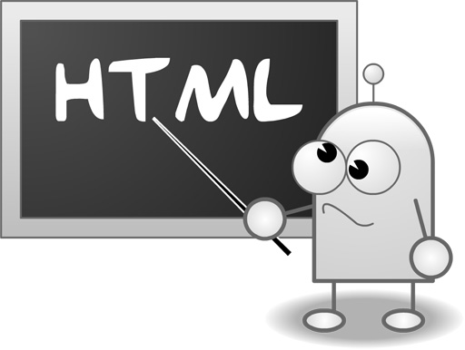

Resumen
Este documento define las reglas de formato y estilo para escribir HTML/CSS. Su objetivo es mejorar la colaboración y la calidad del código, así como hacerlo compatible con la infraestructura. Se aplica a archivos HTML/CSS, incluidos los archivos GSS. Siempre que la calidad del código sea mantenible, puede ser correctamente ofuscado, comprimido y combinado por las herramientas.

Reglas de estilo
Protocolo
Omitir el protocolo en recursos incrustados
- Omite la declaración del prefijo de protocolo en las URL de imágenes, archivos multimedia, hojas de estilo y scripts (http:, https:). No omitas el protocolo en URL que no usen esas declaraciones.
- Omitir el prefijo de protocolo convierte la URL en una dirección relativa, evita problemas de contenido mixto y reduce descargas repetidas de archivos pequeños.
<!-- 不推荐 -->
<script src="http://www.google.com/js/gweb/analytics/autotrack.js"></script>
<!-- 推荐 -->
<script src="//www.google.com/js/gweb/analytics/autotrack.js"></script>
/* 不推荐 */
.example {
background: url(http://www.google.com/images/example);
}
/* 推荐 */
.example {
background: url(//www.google.com/images/example);
}
Reglas de formato
Sangría
Usa dos espacios para cada sangría.
Mayúsculas y minúsculas
Usa solo minúsculas.
Espacios al final de la línea
Elimina los espacios en blanco al final de las líneas.
Reglas de metadatos
Codificación
Usa codificación UTF-8 sin BOM.
Configura tu editor para que utilice la codificación UTF-8 sin marca de orden de bytes.
Especifica la codificación <meta charset="utf-8"> en las plantillas y archivos HTML. No es necesario especificar la codificación de las hojas de estilo, ya que su valor predeterminado es UTF-8.
(Para obtener más información sobre la codificación y cómo especificarla, consultaCharacter Sets & Encodings in XHTML, HTML and CSS。）
Comentarios
Explica tu código tanto como sea posible.
Usa comentarios para explicar el código: qué incluye, cuál es su propósito, qué hace, por qué se usó esa solución o si solo se debe a una preferencia.
(Esta regla es opcional; no es necesario documentar cada código en detalle, ya que aumentaría el peso del código HTML y CSS. Depende de la complejidad del proyecto.)
Elementos de acción
Marca las tareas pendientes y los elementos en curso con TODO.
Usa TODO únicamente para resaltar tareas pendientes; no uses otros formatos comunes, como @@.
Añade la persona de contacto (lista de nombres de usuario o correos electrónicos) entre paréntesis, por ejemplo, TODO(contact).
Se puede añadir una descripción del elemento de acción después de los dos puntos, por ejemplo, TODO: descripción de la tarea.
{# TODO(cha.jn): 重新置中 #}
<center>Test</center>
<!-- TODO: 删除可选元素 -->
<ul>
<li>Apples</li>
<li>Oranges</li>
</ul>
Reglas de estilo del código HTML
Tipo de documento
Usa el estándar HTML5.
Validez del código HTML
Usa código HTML válido siempre que sea posible.
Escribe código HTML válido; de lo contrario, será difícil lograr mejoras de rendimiento.
Usa herramientas comoW3C HTML validatorpara realizar pruebas.
La validez del código HTML es una medida de calidad importante y garantiza que el código HTML se pueda utilizar correctamente.
<!-- 不推荐 --> <title>Test</title> <article>This is only a test. <!-- 推荐 --> <!DOCTYPE html> <meta charset="utf-8"> <title>Test</title> <article>This is only a test.</article>
Semántica
Usa los elementos HTML según su propósito.
Usa los elementos (a veces llamados erróneamente «etiquetas») sabiendo por qué se utilizan y si es correcto. Por ejemplo, usa elementos de encabezado para títulos, el elemento p para párrafos y el elemento a para enlaces, etc.
Es importante usarlos según el propósito de cada elemento HTML, ya que esto afecta la accesibilidad, la reutilización y la eficiencia del código del documento.
<!-- 不推荐 --> <div onclick="goToRecommendations();">All recommendations</div> <!-- 推荐 --> <a href="recommendations/index.html">All recommendations</a>
Alternativas para multimedia
Proporciona contenido alternativo para multimedia.
Para elementos multimedia como imágenes, videos y animaciones renderizadas mediante canvas, asegúrate de proporcionar una alternativa. Para imágenes, utiliza texto alternativo significativo (alt); para video y audio, utiliza transcripciones y descripciones de texto válidas.
Proporcionar contenido alternativo es importante porque da a los usuarios ciegos un texto descriptivo, les dice mediante el atributo alt de qué trata la imagen, y ofrece pistas a los usuarios que pueden no haber entendido el contenido del video o el audio.
(El atributo alt de una imagen puede resultar redundante; si la imagen se utiliza solo con fines decorativos y no se puede lograr con CSS de inmediato, no es necesario usar texto alternativo; puedes escribir alt="".)
<!-- 不推荐 --> <img src="spreadsheet.png.html"> <!-- 推荐 --> <img src="spreadsheet.png.html" alt="电子表格截图">
Separación de responsabilidades
Separa la presentación y el comportamiento.
Mantén estrictamente separados la estructura (marcado), la presentación (estilos) y el comportamiento (scripts), y trata de mantener al mínimo la interacción entre estos tres.
Asegúrate de que los documentos y las plantillas contengan solo estructura HTML; coloca toda la presentación en las hojas de estilo y todo el comportamiento en los scripts.
Además, minimiza la superficie de contacto de los scripts y las hojas de estilo con los documentos y las plantillas, es decir, reduce las referencias externas.
Es importante mantener separados la presentación y el comportamiento, porque modificar la estructura del documento HTML y las plantillas suele ser más costoso que actualizar las hojas de estilo y los scripts.
<!-- 不推荐 --> <!DOCTYPE html> <title>HTML sucks</title> <link rel="stylesheet" href="base.css.html" media="screen"> <link rel="stylesheet" href="grid.css.html" media="screen"> <link rel="stylesheet" href="print.css.html" media="print"> <h1 style="font-size: 1em;">HTML sucks</h1> <p>I’ve read about this on a few sites but now I’m sure: <u>HTML is stupid!!1</u> <center>I can’t believe there’s no way to control the styling of my website without doing everything all over again!</center> <!-- 推荐 --> <!DOCTYPE html> <title>My first CSS-only redesign</title> <link rel="stylesheet" href="default.css.html"> <h1>My first CSS-only redesign</h1> <p>I’ve read about this on a few sites but today I’m actually doing it: separating concerns and avoiding anything in the HTML of my website that is presentational. <p>It’s awesome!
Referencias a entidades
No uses referencias a entidades.
No es necesario usar referencias a entidades como —, ” y ☺, siempre que los archivos y editores utilizados por el equipo compartan la misma codificación (UTF-8).
Los caracteres con significado especial en un documento HTML (por ejemplo
<
和
&
son una excepción; ah, y también los caracteres «invisibles» (como el espacio de no separación, no-break space).
<!-- 不推荐 --> 欧元货币符号是 “&eur;”。 <!-- 推荐 --> 欧元货币符号是 “€”。
Etiquetas opcionales
Omitir etiquetas opcionales (opcional).
Por razones de optimización del tamaño del archivo y de validación, se pueden omitir las etiquetas opcionales; para saber cuáles son las etiquetas opcionales, consultaHTML5 specification。
(Este método puede requerir especificaciones más precisas; muchos desarrolladores tienen opiniones diferentes al respecto. Por razones de consistencia y simplicidad, es necesario omitir todas las etiquetas opcionales.)
<!-- 不推荐 -->
<!DOCTYPE html>
<html>
<head>
<title>Spending money, spending bytes</title>
</head>
<body>
<p>Sic.</p>
</body>
</html>
<!-- 推荐 -->
<!DOCTYPE html>
<title>Saving money, saving bytes</title>
<p>Qed.
Atributo type
En las etiquetas de hojas de estilo y scripts, omite
type
el atributo.
En las etiquetas de hojas de estilo (a menos que no se use CSS) y de scripts (a menos que no se use JavaScript), no escribas
type
el atributo.
HTML5 tiene por defecto
type
为
text/css
和
text/javascript
el tipo, por lo que no es necesario especificarlo. Incluso los navegadores antiguos lo admiten.
<!-- 不推荐 --> <link rel="stylesheet" href="//www.google.com/css/maia.css" type="text/css"> <!-- 推荐 --> <link rel="stylesheet" href="//www.google.com/css/maia.css"> <!-- 不推荐 --> <script src="//www.google.com/js/gweb/analytics/autotrack.js" type="text/javascript"></script> <!-- 推荐 --> <script src="//www.google.com/js/gweb/analytics/autotrack.js"></script>
Reglas de formato del código HTML
Cada elemento de bloque, elemento de lista o elemento de tabla se coloca en una línea independiente, y cada elemento hijo se sangra con respecto a su elemento padre.
El estilo de elementos independientes (ya que CSS permite que los elementos asuman un rol diferente según la
display
propiedad), coloca los elementos de bloque, de lista o de tabla en una línea nueva.
Además, se deben sangrar los elementos hijos de los elementos de bloque, de lista o de tabla.
(Si aparecen problemas con nodos de texto vacíos a la izquierda o derecha de los elementos de lista, intenta colocar todos los
li
elementos en una sola línea.)
<blockquote>
<p><em>Space</em>, the final frontier.</p>
</blockquote>
<ul>
<li>Moe
<li>Larry
<li>Curly
</ul>
<table>
<thead>
<tr>
<th scope="col">Income
<th scope="col">Taxes
<tbody>
<tr>
<td>$ 5.00
<td>$ 4.50
</table>
Haz clic para compartir notas
<p style="font-size:14px;">¡La nota debe ser una extensión del contenido de este artículo!</p><br> <p style="font-size:12px;"><a href="../tougao.html" target="_blank">Envío de artículos, haz clic aquí</a></p> <p style="font-size:14px;"><a href="./runoob-user-test-intro.html" target="_blank">Método para obtener el código de invitación de registro</a></p> <h3 class="text-muted"><i class="fa fa-info-circle" aria-hidden="true"></i> ¡Debes <a href=".." class="runoob-pop">iniciar sesión</a> antes de compartir notas!</h3> <p><a href="./runoob-user-test-intro.html" target="_blank">Método para obtener el código de invitación de registro</a></p>